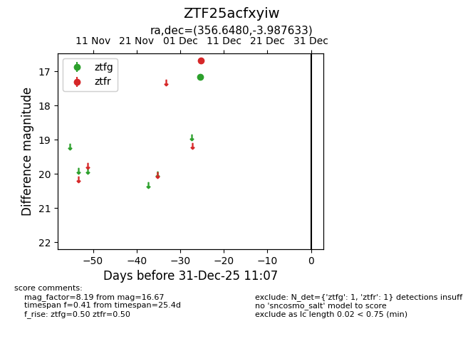

ZTF25acfxyiw
Target ZTF25acfxyiw at 2025-12-18 11:17
Aliases and brokers:
FINK: fink-portal.org/ZTF25acfxyiw
Lasair: lasair-ztf.lsst.ac.uk/objects/ZTF25acfxyiw
ALeRCE: alerce.online/object/ZTF25acfxyiw
alt names
ZTF25acfxyiw (ztf,fink_ztf)
Coordinates:
equatorial (ra, dec) = 356.6480,-3.98763
equatorial (HMS+DMS) = 23:46:35.51,-03:59:15.48
galactic (l, b) = (86.3239,-62.15823)
Photometry
last ztfg=17.15, ztfr=16.67
1 ztfg, 1 ztfr detections
Lightcurve

Visibility


Additional plots